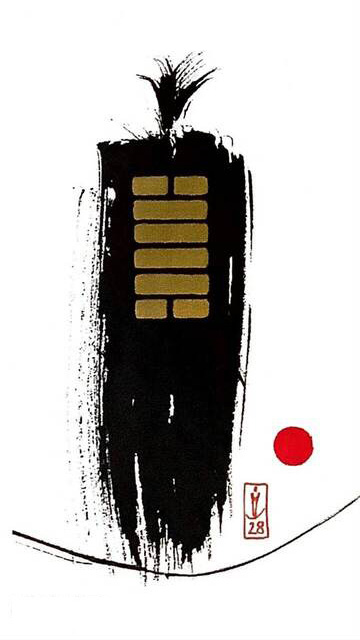

택풍대과 (클 대.지날 과)
대흉괘 5
(삐요삐요 위험)
과유불급이다정상에서 벗어난 상황이다몸집이 큰 사람이 얇은 줄 위에 서 있다.줄이 견디지 못하고 금방이라도 끊어질 듯한 위기 상황을 표현한 그림번아웃증후군
크게 지나침.과도한 부담.과잉.정신적 고통.피로.소진.폭식.과식.과욕.부담.우려.짐.비상상태.강박관녕.과소비.과로.스트레스.
연애운
부담.자신감 없음.피하고 싶음.모태솔로.대인기피증
사업운
버거워 함.위태로움.곤란함.자제해야 함.스트레스 많음
속마음
썸부담스럽고 자신 없어 하는 마음
1년 이상위기같은 부담감을 느끼는 마음
이별 후재회하기 두렵고 아직은 피하고 싶은 마음
솔로연애운
새로운 이성 생길 확률 낮다
건강운
위험함.과로 조심.심리적 압박으로 인한 정신적 고통.우을증